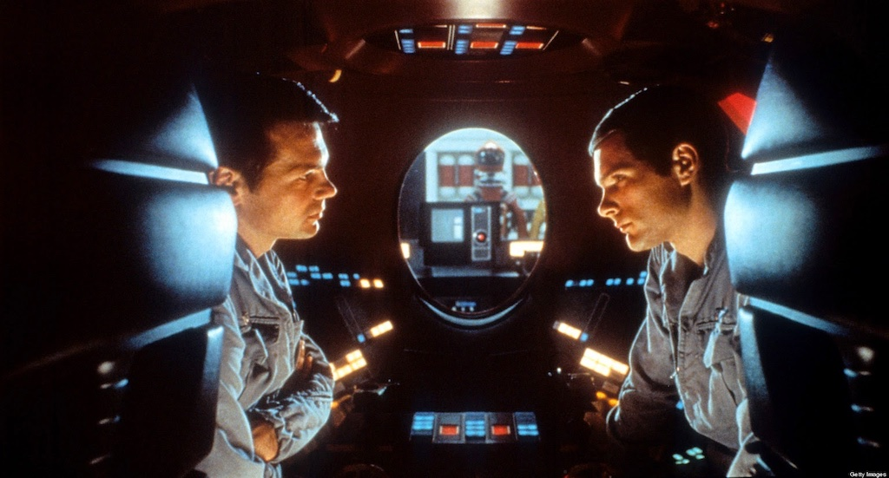
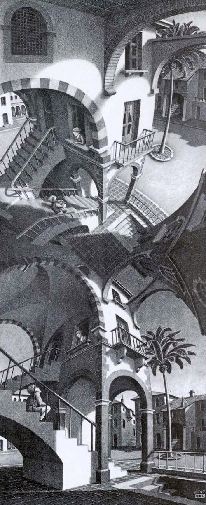
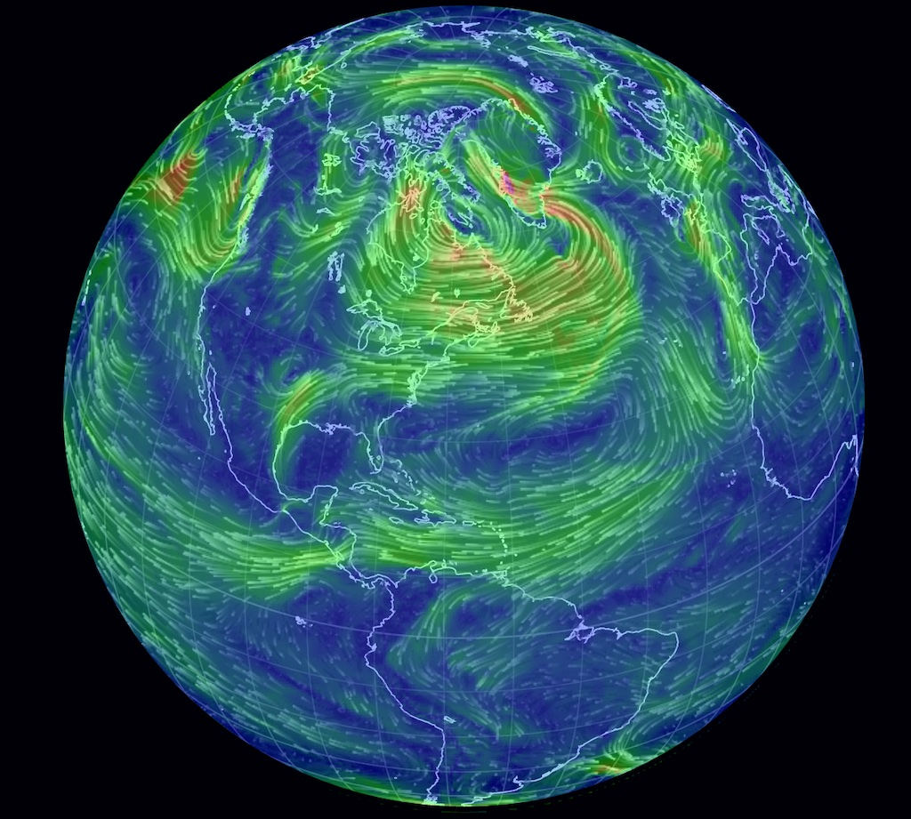

This is the track for a talk that I gave at the Copenhagen Institute of Interaction Design in 2016.
Introduction
The rise of internet of things seems to be just a playground for new technologies but it is an expanding space for interaction design.
Interconnectedness and intelligence are new dimensions to the physical world; these properties give environments and objects the power to learn, sense, act and behave; redefining the founding concepts of our perception of space. These qualities bring magic, surprise, affection but are as well extremely complex to understand, to prototype, to design towards;
Pierluigi is fascinated with complex systems and believes that, in order to unfold the possibilities of today’s technologies to craft a better living for tomorrow, there is an emerging need to understand and play with complexity.
Complexity stage one
Noise
From Latin nausæ ‘seasickness’
Noise, or random perturbations, are key factors in reaching a state of equilibrium in nature and systems in general; noise allows the system to explore a variety of states in his own space and settle, where it can ignore complexity.
Complexity stage two
Entropy
From Greek tropē ‘transformation’
Where do we see lack of order and unpredictabilities in today’s world?
We are transitioning from the era of algorithmic intelligence to the era of artificial intelligence. This transition brings with it a new level of complexity, as machines seem to exhibit their own autonomy and adaptive capabilities. Within this landscape, entropy becomes a dominant force, shaping the boundaries of possibility and challenging our traditional notions of control. As we navigate the evolving terrain of design and complexity, embracing and understanding the role of entropy is key in order to design adaptive interfaces in a world in flux.
[bot1]: Hi there!. Enough about me, let's talk about my dress.
[Stranger]: Oksy
[bot1]: Actually that was just a joke. I don't have a dress.
Bots know pretty well how to keep people interested.
The totality of beliefs and sentiments common to the average members of a society forms a determinate system with a life of its own. It can be termed the collective or creative consciousness.
— Emile Durkheim
Complexity stage three
Evolution
From Latin evolutio ‘unrolling’
The process of evolution feeds from entropy and it is a dynamic force that shapes our world, propelling systems, organisms, and ideas towards sophistication or plainness. As we embrace complexity and utilize it as a force to shape the realms of design, we witness the emergence of intricate structures, refined patterns, and interconnected networks. Evolution nurtures innovation, adapting and molding creations to fit the ever-changing landscape of technological soup and molten design material. It is through a transformative journey of embracing variation and experimentation that we uncover novel solutions, unlocking the potential to shape a future that has inspiring and harmonious qualities. By embracing the essence of evolution, designers become catalysts for change, crafting designs that resonate with the unfolding narrative of our complex world.
Complexity stage four
Emergence
From Latin emergere ‘bring to light’
If it is hard to predict the weather it is almost impossible to predict human behavior.
Predicting human behavior is even more challenging than predicting the weather. As interaction designers, we need to create simulations of environments, of everyday life, of situations tomorrow to situate ourselves inside it and understand current trends and imagine future challenges. By embracing simulation as a tool, we equip ourselves with the ability to anticipate and respond to the evolving landscape of technology and human behavior. By exploring these simulated worlds, we can uncover emerging opportunities for designing interactions with digital artifacts, physical materials, and substrates of society. Complexity becomes a powerful tool for us to shape the future of our interactions and experiences, illuminating new possibilities along the way.
Epilog
Entropy - understanding complexity
Evolution - mastering complexity
Emergence - complexity as medium
At its pinnacle, complexity emerges as a medium; a transformative force that shapes our world. Just as the digital revolution turned complex systems into the mundane, we need to look ahead, in a future where connected environments and artificial intelligence will be pervasive and they will hold the promise of further embracing complexity as a medium.
In this ever-evolving landscape, we stand poised to explore, create, and redefine our interactions with the intricacies of our complex world.



{kind=link}